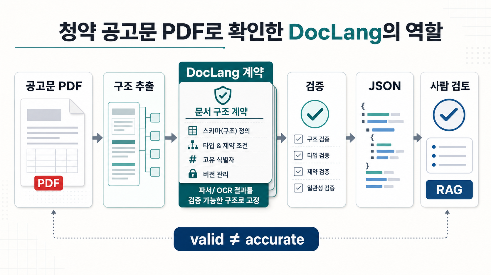
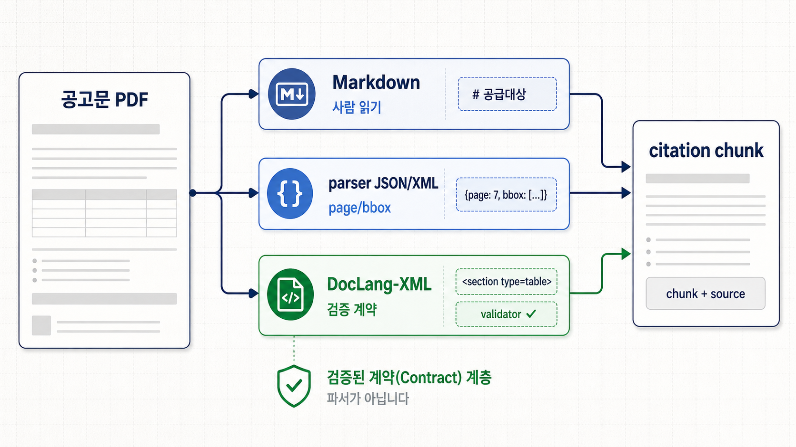

청약 공고문 PDF를 파싱하다가 알게 된 DocLang의 진짜 역할
이 글의 관점
이 글은 DocLang을 “PDF parser”로 소개하기보다, Docling이나 OCR/VLM 같은 앞단 parser 결과를 검증 가능한 문서 구조 계약으로 고정하고, 이후 RAG citation chunk를 만들기 위한 중간표현으로 보는 실험 기록이다. 실험 대상은 공개 청약 공고문 PDF였고, 결론은 도구 성능 비교보다 parser -> DocLang validation -> project QA -> citation-friendly chunk라는 역할 분리에 가깝다.
한 문장으로 말하면
DocLang은 PDF를 직접 잘 읽는 도구라기보다, parser가 읽어낸 문서 조각을 페이지·영역·구조 단위로 검증하고 추적할 수 있게 만드는 계약층에 가깝다고 생각한다.
처음에는 DocLang을 “PDF를 더 잘 읽어주는 도구”에 가깝게 생각했다. 청약 공고문처럼 표가 많고, 페이지 근거가 중요하고, 사람이 읽기에도 피곤한 문서를 넣으면 더 깔끔한 구조가 바로 나올 것 같았다.
직접 써보니 역할이 달랐다.
DocLang은 PDF를 읽는 parser라기보다, parser가 만든 결과를 검증 가능한 문서 구조 계약으로 고정하는 중간표현에 가까웠다. 레이아웃을 읽고, 표를 복원하고, 좌표를 만드는 일은 Docling이나 kordoc 같은 parser가 한다. DocLang의 역할은 그 다음이다. parser 결과가 어떤 구조를 가져야 하는지, 각 조각이 어느 페이지와 영역에서 왔는지, RAG에 넣기 전에 근거 단위를 어떻게 만들지 다루는 쪽에 더 가까웠다.
이번 실험은 그 차이를 확인하는 과정이었다.
조금 더 정확히 말하면, 실험은 한 번에 깔끔하게 끝나지 않았다. 처음에는 “DocLang이 PDF를 잘 읽는가?”를 보려고 했다. 그런데 이미지 기반 PDF에서는 텍스트 레이어가 없어 OCR이 먼저 필요했고, 텍스트 레이어가 있는 공고문으로 바꾼 뒤에는 Markdown과 XML, DocLang-XML이 서로 다른 역할을 한다는 점이 보였다. 그 다음에는 kordoc과 Docling의 parser 품질 차이를 봤고, 마지막에는 DocLang validation이 무엇을 잡고 무엇을 못 잡는지 따로 확인했다.
결국 시행착오는 네 단계로 정리됐다.
1. 이미지 기반 PDF → 텍스트가 없어 OCR 필요
2. 텍스트 PDF → Markdown은 읽기 좋지만 근거 위치가 약함
3. kordoc / Docling 비교 → parser 품질과 format 역할은 별개
4. DocLang validation → 구조 오류는 잡지만 내용 정확도는 보장하지 않음그래서 이 글은 특정 도구 하나의 사용기가 아니라, 청약 공고문 PDF를 실제로 파싱해보면서 parser, Markdown, XML, DocLang-XML, validation, chunk의 역할을 다시 나눈 기록에 가깝다.

실험 대상: 청약 공고문 PDF
실험에는 공개 공고문인 2025년 3차 서울시 청년안심주택(공공임대) 입주자 모집공고 PDF를 사용했다. 실험 당시 서울시 청년안심주택 공고 페이지(soco.seoul.go.kr)에 게시된 파일을 기준으로 확인했다.
청약 공고문은 문서 AI 파이프라인을 시험하기 좋은 대상이다.
- 페이지가 길다.
- 표가 많다.
- 일정, 공급현황, 신청자격, 임대조건처럼 섹션 의미가 중요하다.
- 답변을 만들 때 “어느 페이지의 어느 표에서 나온 말인가?”가 중요하다.
- Markdown으로만 펴면 읽기는 편하지만, 근거 위치와 표 구조가 쉽게 사라진다.
처음에는 이미지 기반 PDF도 함께 확인했다. 그 PDF는 텍스트 레이어가 거의 없어 pdftotext 결과가 사실상 비어 있었고, kordoc도 OCR이 필요하다고 판단했다. 이 지점이 중요했다. DocLang이 있다고 해서 OCR이 생기는 것은 아니다. 텍스트가 없는 PDF에는 OCR이나 VLM 기반 추출이 먼저 필요하다.
그래서 본 실험은 텍스트 레이어가 있는 60페이지짜리 공고문으로 옮겨 진행했다.
Markdown, XML, DocLang-XML을 실제로 비교해보니
실험 중간에 같은 PDF 구간을 여러 형태로 뽑아봤다. 처음에는 Markdown만 보면 충분할 것 같았다. 실제로 Markdown은 사람이 읽기 가장 좋았다. 제목, 본문, 표가 바로 보이고 Obsidian이나 블로그로 옮기기도 쉬웠다.
예를 들어 Docling이 pages 6-10에서 뽑은 Markdown은 이렇게 읽혔다.
## ■ 인터넷 청약신청 세부일정
| 대상자 | 접수일정 | 인터넷청약주소 |
| ---------------------- | --------------------------------------------- | ------------------ |
| 청년계층, 신혼부부계층 | 2026.01.13.(화) 10:00 ~ 2026.01.15.(목) 17:00 | www.i-sh.co.kr/app |이 출력은 사람이 읽기에는 가장 좋다. 표도 바로 보이고, 블로그나 Obsidian note에 옮기기 쉽다. 하지만 이 표가 원문 6페이지의 어느 영역에서 왔는지, parser가 이 영역을 어떤 bbox로 잡았는지, 이후 답변에서 이 표를 citation 단위로 추적할 수 있는지는 Markdown만 봐서는 알기 어렵다.
kordoc의 JSON block을 보면 같은 문서에 대해 다른 정보가 보인다.
{
"type": "heading",
"pageNumber": 6,
"bbox": { "x": 83.547, "y": 738.158, "width": 463.275, "height": 31.4775 },
"text": "공급일정"
}여기에는 pageNumber와 bbox가 있다. 즉 사람이 읽기 좋은 결과라기보다 parser가 문서를 어떻게 조각냈는지 보여주는 구조 데이터에 가깝다. 이 정보를 XML로 옮기면 계층 구조와 위치 정보를 담을 수 있다. 하지만 임의 XML은 문제가 있다. <heading>, <table>, <bbox>를 마음대로 만들 수는 있지만, 그게 어떤 규칙을 따라야 하는지, 좌표 타입이 무엇이어야 하는지, table은 어떻게 표현해야 하는지에 대한 공통 계약이 없다.
DocLang-XML은 이 지점에서 차이가 났다. Docling이 만든 DocLang-XML에는 같은 문서 조각이 이런 식으로 남았다.
<heading level="2">
<location value="51"/>
<location value="48"/>
<location value="178"/>
<location value="61"/>
1 공급일정
</heading>그리고 표는 단순한 pipe table이 아니라 table-control marker와 함께 남았다.
<table>
<location value="36"/>
<location value="93"/>
<location value="475"/>
<location value="183"/>
<ched/>공급
<ched/>공급 호수 (실)
<ched/>면적(㎡)
<nl/>
...
</table>이 출력은 사람이 읽기에는 Markdown보다 불편하다. 대신 기계가 검증하고 추적하기에는 훨씬 낫다. heading, table, text, picture, page_break, location 같은 문서 단위가 정해진 태그로 남고, validator로 최소 구조를 확인할 수 있다.
실제 비교 결과는 이렇게 정리할 수 있었다.
| 형태 | 실제로 좋았던 점 | 실제로 드러난 한계 |
|---|---|---|
| Markdown | 사람이 읽기 가장 좋다. 인터넷 청약신청 표처럼 간단한 표는 바로 이해된다. Obsidian/블로그/RAG 입력으로 쓰기 쉽다 | page/bbox가 사라진다. table이 pipe table로 예쁘게 보여도 원문 영역, parser 판단, QA flag를 추적하기 어렵다 |
| parser JSON / 일반 XML화 가능한 구조 | pageNumber, bbox, block type이 남는다. parser가 문서를 어떻게 나눴는지 볼 수 있다 | parser마다 구조가 다르다. 일반 XML로 바꿔도 프로젝트 임의 규칙이 되기 쉽고, validator가 없으면 잘못된 좌표나 속성 타입을 놓치기 쉽다 |
| DocLang-XML | 문서 단위와 위치가 계약화된다. location 타입, heading level 같은 structural mismatch를 validator가 잡는다. table-control marker가 남아 Markdown보다 구조 힌트가 많다 | XML이라 사람이 읽기 무겁다. validation은 형식 검증이지 표 추출 정확도 검증은 아니다. location이 없는 heading도 통과할 수 있어 project QA가 추가로 필요하다 |
가장 인상적이었던 차이는 table에서 나왔다. Docling Markdown은 인터넷 청약신청 표를 깔끔한 3-column table로 보여줬다. 반면 kordoc은 같은 구간에서 page/bbox는 잘 남겼지만, 일정표와 인터넷 청약 표 일부가 하나의 큰 table block 안에 섞이거나 날짜 조각이 흩어지는 경우가 있었다. DocLang-XML은 Docling의 결과를 받아 table과 location을 함께 남겼기 때문에, 이후에 source_page, bbox, section_path를 가진 chunk로 바꾸기 좋았다.
그래서 결론은 “Markdown이 나쁘고 DocLang이 좋다”가 아니었다. 역할이 달랐다.
Markdown = 사람이 읽는 최종 표현
parser JSON = parser가 본 문서 조각과 좌표
일반 XML = 구조화는 가능하지만 계약은 프로젝트마다 따로 필요
DocLang-XML = parser 결과를 검증 가능한 문서 계약으로 고정하는 중간표현이번 실험의 관점도 여기서 바뀌었다. DocLang을 Markdown의 대체물로 볼 게 아니라, Markdown 앞에 놓이는 검증 가능한 중간 계약으로 보는 편이 맞았다.

parser와 format은 다른 문제였다
kordoc으로 PDF 일부를 JSON/Markdown으로 뽑아보면 페이지 번호와 bbox 좌표가 있는 block이 나온다. 이 결과를 최소한의 DocLang XML로 바꿔 검증했을 때, 처음에는 실패했다.
이유는 단순했다. kordoc의 bbox는 float 좌표였고, DocLang의 location@value는 non-negative integer를 요구했다.
<!-- 실패한 예: location 값이 float -->
<heading level="1">
<location value="51.5" />
<location value="48" />
<location value="178" />
<location value="61" />
1 공급일정
</heading>좌표를 정수로 반올림하자 검증을 통과했다.
{
"xsd": { "valid": true, "errors": [] },
"schematron": { "valid": true, "errors": [] }
}이 작은 실패가 오히려 DocLang의 성격을 잘 보여줬다. DocLang은 “문서를 예쁘게 읽어주는 도구”가 아니라, parser 결과를 일정한 계약에 맞추도록 강제하는 쪽에 가깝다. 좌표 타입이 틀렸으면 틀렸다고 말해준다. heading level이 two처럼 들어가면 그것도 실패시킨다.
다만 여기서 바로 경계해야 할 점이 있다.
valid는 accurate와 다르다.
validation을 통과했다는 말은 XML shape이 DocLang 규칙에 맞는다는 뜻이지, 표가 정확히 읽혔거나 원문 내용이 올바르게 추출됐다는 뜻은 아니다. 구조 검증과 내용 정확도 검증은 다른 층이다.
kordoc과 Docling을 비교해보니
청약 공고문처럼 표가 많은 PDF에서는 parser 품질 차이가 꽤 크게 보였다.
kordoc은 가볍게 돌려볼 수 있고, 한국어 문서에서 텍스트 레이어 유무를 확인하거나 OCR 필요 여부를 판정하는 데 쓸모가 있었다. 다만 복잡한 표에서는 행과 열이 깨지거나, 표 안에 있어야 할 값이 주변 텍스트로 흩어지는 경우가 있었다.
Docling은 더 무겁지만 표 복원은 더 나았다. pages 6-10 구간에서 Docling은 공급일정 표, 인터넷 청약신청 세부일정 표, 공급현황 표를 비교적 읽을 만한 Markdown table과 DocLang XML로 뽑아냈다.
실행은 대략 이런 식이었다.
docling notice_p6_10.pdf \
--to md --to json --to doclang \
--output out/docling_p6_10 \
--no-ocr --tables --table-mode accurate \
--image-export-mode placeholder -v여기서 중요한 옵션은 --image-export-mode placeholder였다. 기본 이미지 export를 그대로 두면 Markdown이 너무 커지고 노이즈가 많아졌다. RAG나 블로그 실험용으로는 placeholder가 더 현실적이었다.
Docling 결과도 완벽하지는 않았다.
- 한국어 띄어쓰기가 압축되는 곳이 있었다.
- multi-row table header가
면적(㎡)같은 반복 헤더로 어색하게 바뀌기도 했다. - row span으로 시각적으로 이어지는 값이 다음 행에 제대로 전파되지 않는 경우가 있었다.
- split PDF를 처리하면 page number가 원본 기준이 아니라 split 파일 기준이 될 수 있어 offset 보정이 필요했다.
- Docling이 만든 DocLang XML은 namespace가 비어 있어
doclang validate --allow-empty-namespace가 필요했다.
그래도 “청약 공고문에서 표를 구조화한다”는 기준에서는 Docling 쪽이 kordoc보다 확실히 유리했다.
DocLang XML 안에는 무엇이 남았나
pages 6-10에서 만든 DocLang XML을 다시 들여다봤다. 이 파일은 32KB 정도였고, DocLang validator에서 XSD와 Schematron 모두 valid로 나왔다.
태그 수를 세어보면 대략 이런 구조였다.
{
"table": 7,
"heading": 10,
"text": 44,
"picture": 4,
"page_break": 4,
"page_footer": 5,
"location": 308
}문서 흐름은 사람이 봐도 어느 정도 읽혔다.
heading: 1 공급일정
heading: ■ 입주자모집 절차 및 일정
heading: ○ 공고일 : 2025.12.30.(화)
picture: schedule timeline region
table: schedule timeline cells
text: ※ 일정은 진행상황에 따라 변동 가능...
heading: ■ 인터넷 청약신청 세부일정
table: 대상자 / 접수일정 / 인터넷청약주소
heading: 3 공급현황 _ 322세대
heading: ■ 신규공급 : 9세대
table: 신규공급 표
heading: ■ 재공급 : 313세대
table: 재공급 표
page_break
...Markdown은 사람이 읽기 좋다. 하지만 Markdown만 남기면 “이 문장이 원문 어느 영역에서 왔는지”가 약해진다. 반대로 DocLang에는 heading, table, text, picture 같은 의미 단위와 location이 같이 남는다. 청약 공고문처럼 근거가 중요한 문서에서는 이 차이가 꽤 크다.
DocLang이 잘한 것: citation-friendly chunk의 바탕
이번 실험에서 가장 실용적이었던 부분은 DocLang을 최종 산출물로 쓰는 게 아니라, chunk 생성의 중간 substrate로 쓰는 방식이었다.
파이프라인은 이렇게 보는 편이 맞았다.
PDF
-> Docling / kordoc / OCR
-> DocLang XML
-> doclang validate
-> project QA / chunk layer
-> citation-friendly JSON chunks
-> RAG / Markdown / Obsidian간단한 QA/chunk script를 붙여서 DocLang XML에서 chunk를 뽑았다. pages 6-10 기준 결과는 이랬다.
{
"chunks": 33,
"chunk_type_counts": {
"heading": 10,
"picture": 4,
"table": 7,
"text": 2,
"list": 5,
"page_footer": 5
},
"flag_counts": {
"many_empty_cell_markers": 5
},
"found_key_sections": {
"공급일정": true,
"신청관련": true,
"공급현황": true,
"임대조건": false,
"신청자격": false
}
}여기서 임대조건, 신청자격이 false인 것은 반드시 실패라고 보기는 어렵다. 이번에 처리한 구간이 원본 6-10페이지였기 때문이다. 해당 섹션은 뒤쪽 페이지에 있을 수 있다. 그래서 key-section QA도 문서 전체 기준인지, 특정 page range 기준인지 구분해야 한다.
chunk 하나는 이런 모양이었다.
{
"chunk_id": "p006-008-table",
"type": "table",
"source_page": 6,
"bbox": [36, 218, 476, 262],
"section_path": ["1 공급일정", "■ 인터넷 청약신청 세부일정"],
"text": "대상자 접수일정 인터넷청약주소 청년계층, 신혼부부계층 2026.01.13.(화) 10:00 ~ 2026.01.15.(목) 17:00 www.i-sh.co.kr/app",
"table_stats": {
"estimated_rows": 3,
"cell_marker_count": 6,
"header_cell_marker_count": 3
},
"flags": []
}이 형태가 마음에 들었다. RAG에 넣을 때 단순히 텍스트만 넣는 것이 아니라, source_page, bbox, section_path, table_stats, flags를 같이 들고 갈 수 있기 때문이다. 나중에 답변이 나왔을 때 “이 답은 p006-008-table에서 왔고, 원문 6페이지의 이 bbox에 있다”라고 추적할 수 있다.
문서 QA 관점에서도 장점이 있다. 예를 들어 table chunk에 빈 cell marker가 너무 많으면 many_empty_cell_markers 같은 flag를 붙일 수 있다. 그러면 downstream에서는 이 chunk를 낮은 신뢰도로 다루거나, 사람 검토 대상으로 보낼 수 있다.
DocLang validation만으로는 부족하다
DocLang validator는 필요한 도구지만, 이것만으로 충분하지는 않았다.
실험에서 일부러 에러 케이스를 만들었다.
| 케이스 | 결과 | 의미 |
|---|---|---|
location value="51.5" | XSD 실패 | 좌표 타입 오류를 잡음 |
heading level="two" | XSD 실패 | heading level 타입 오류를 잡음 |
| heading의 location 제거 | 통과 | schema validity와 grounding completeness는 다름 |
특히 세 번째가 중요하다. 어떤 heading에서 location을 모두 제거해도 XSD와 Schematron을 통과했다. 즉 DocLang의 기본 validation은 “이 XML이 DocLang 규칙에 맞는가”를 보지만, “모든 주요 단위가 근거 위치를 갖는가”까지 보장하지는 않는다.
청약 공고문 RAG를 만든다면 별도 project rule이 필요하다.
프로젝트 QA 규칙 예시
- top-level heading/text/table은 source_page를 가져야 한다.
- top-level heading/text/table은 bbox를 가져야 한다.
- table은 최소 row/column 구조를 가져야 한다.
- 필수 섹션은 문서 전체 기준으로 확인한다.
- page range 처리 시 원본 page offset을 보정한다.
- table flag가 있는 chunk는 낮은 confidence로 표시한다.이 지점에서 DocLang의 위치가 더 명확해진다. DocLang은 최종 QA 전체가 아니라, QA를 걸 수 있는 구조화된 바닥이다.
최종 산출물과 중간 계약을 나눠야 한다
여기서 정리된 원칙은 단순했다. Markdown은 사람이 읽는 최종 산출물로 두고, DocLang-XML은 그 앞단의 검증 가능한 중간 계약으로 두는 편이 맞다.
PDF / DOCX / image
-> parser / OCR / VLM extraction
-> DocLang XML as contract
-> validation + project QA
-> citation-friendly chunks
-> Markdown / Obsidian / RAG / blog output둘 중 하나를 고르는 문제가 아니었다. Markdown은 읽기 쉽지만 근거 위치와 QA 정보를 담기 어렵고, DocLang-XML은 읽기 불편하지만 기계가 검증하고 추적하기 좋다. 청약 공고문처럼 답변의 근거가 중요한 문서에서는 이 두 층을 나눠 두는 것이 더 현실적이었다.
이번 실험에서 바뀐 질문
처음 질문은 “DocLang이 PDF를 잘 읽나?”에 가까웠다. 실험 후 질문은 “PDF parser 결과를 어떻게 검증 가능한 문서 계약으로 바꿀 수 있나?”로 바뀌었다.
이건 꽤 다른 질문이다.
PDF parser 품질은 여전히 중요하다. 청약 공고문 표를 제대로 읽으려면 Docling 같은 parser의 layout/table model이 필요하다. 텍스트 레이어가 없는 PDF라면 OCR도 필요하다. DocLang은 그 앞단을 대체하지 않는다.
대신 parser 결과가 생긴 뒤에는 DocLang이 쓸모가 있었다. heading, table, page break, location을 가진 문서 stream이 생기고, validator로 기본 structural mismatch를 잡고, 그 위에 project-specific QA를 얹을 수 있었다. 그리고 최종적으로 source_page, bbox, section_path를 가진 citation-friendly chunk를 만들 수 있었다.
개인적으로는 이 지점이 가장 현실적인 사용처라고 본다. “DocLang으로 문서 정리를 끝낸다”가 아니라 “DocLang을 중간 계약으로 두고, 그 위에 QA와 chunking을 올린다.”
다음에 더 해볼 것
다음 실험은 parser 비교보다 DocLang contract layer를 더 밀어보는 쪽이 좋겠다.
Docling-generated DocLang
-> namespace normalization
-> original page number offset correction
-> project-level QA rules
-> table row/column quality scoring
-> required-section coverage check
-> citation-friendly chunk export
-> RAG answer with page/bbox citation특히 청약 공고문에서는 “정답 텍스트”보다 “근거가 붙은 정답”이 중요하다. 일정, 자격, 임대조건, 공급현황을 잘못 말하면 단순 요약 오류가 아니라 실제 의사결정 오류가 된다. 그래서 문서 AI 파이프라인은 parser만으로 끝나면 안 되고, validation과 citation layer가 있어야 한다.
DocLang은 그 레이어를 만들 때 꽤 괜찮은 재료였다. 다만 parser가 아니고, validator 성공이 품질 보증도 아니다. 이 두 가지를 헷갈리지 않는 것이 이번 실험의 가장 큰 수확이었다.
실험에서 얻은 결론
- DocLang은 PDF를 직접 잘 읽어주는 parser가 아니라, parser/OCR/VLM이 만든 결과를 검증 가능한 문서 구조 계약으로 고정하는 중간 포맷에 가깝다.
- 청약 공고문처럼 표와 근거 위치가 중요한 문서에서는 Markdown만 남기기보다
source_page,bbox,section_path,QA flag를 가진 chunk layer를 두는 편이 유리했다. - Docling은 이번 표 중심 PDF 구간에서 kordoc보다 표 구조를 더 잘 살렸지만, 한국어 spacing, row-span, page offset, namespace 같은 후처리 이슈는 남았다.
- DocLang validation은 좌표 타입이나 heading level 같은 structural mismatch를 잡는 데 유용하지만, 추출 품질이나 모든 요소의 grounding completeness까지 보장하지는 않는다.
- 실무적으로는
parser -> DocLang validate -> project QA -> citation-friendly chunks -> RAG/Obsidian/Markdown순서가 가장 현실적인 파이프라인으로 보인다.
FAQ
DocLang은 PDF parser인가?
이 글의 기준에서는 parser라기보다 parser 결과를 담는 문서 구조 계약에 가깝다. PDF layout을 읽고 표를 복원하는 일은 Docling, kordoc, OCR/VLM 같은 앞단 도구가 맡고, DocLang은 그 결과를 검증 가능한 구조로 고정하는 데 더 가깝다.
RAG에서 DocLang을 쓰면 무엇이 좋아지나?
Markdown 텍스트만 남길 때보다 source_page, bbox, section_path, QA flag 같은 근거 정보를 chunk와 함께 가져가기 쉽다. 그래서 답변 뒤에 “어느 페이지의 어느 영역에서 온 말인가”를 추적하는 citation layer를 만들기 좋았다.
DocLang validation을 통과하면 추출 내용도 정확한가?
아니다. validation 통과는 XML 구조가 규칙에 맞는다는 뜻에 가깝고, 표가 정확히 읽혔는지나 모든 중요한 문서 조각에 근거 위치가 붙었는지는 별도 project QA로 확인해야 한다.
참고한 공개 자료
- 서울시 청년안심주택 공고 페이지:
soco.seoul.go.kr에 공개된2025년 3차 서울시 청년안심주택(공공임대) 입주자 모집공고PDF - Docling 공식 문서: https://docling-project.github.io/docling/
- Docling GitHub 저장소: https://github.com/docling-project/docling
- Docling arXiv 논문 링크: https://arxiv.org/abs/2408.09869
- 이 글의 예시와 결론은 위 공개 자료와 로컬 실험 로그를 바탕으로 썼다. 단, 공고문 해석이나 청약 의사결정에 필요한 최종 기준은 반드시 원문 공고와 공식 기관 안내를 확인해야 한다.